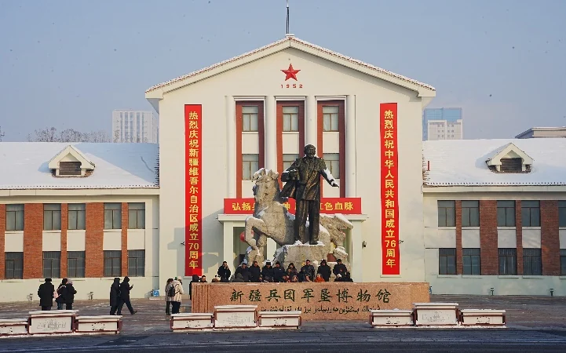
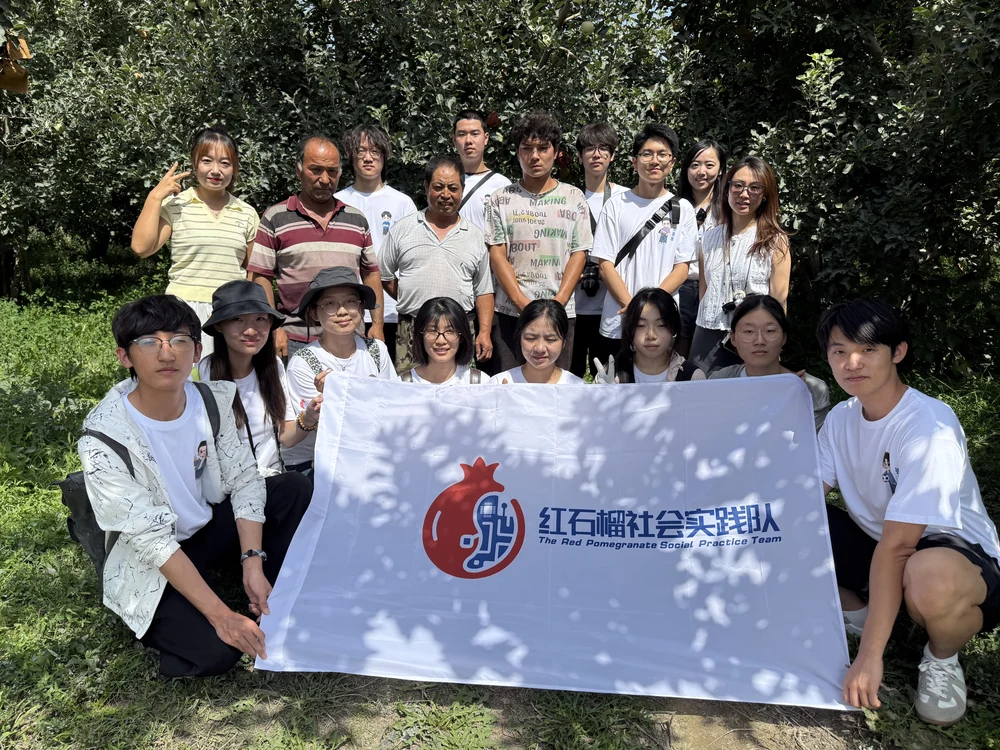
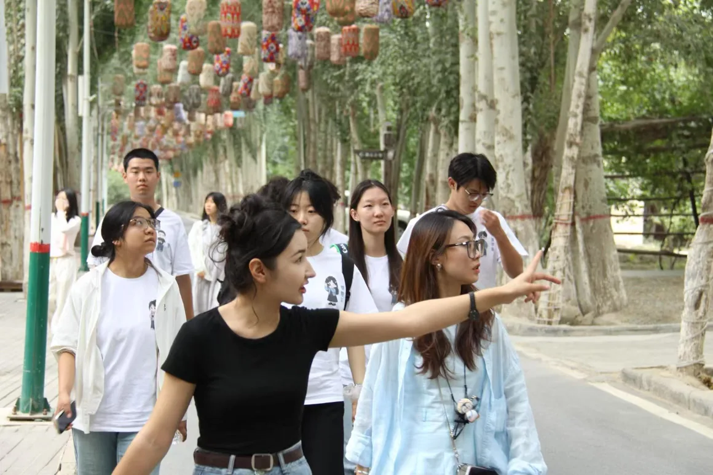

石河子
听老军垦讲述创业往事
在兵团军垦博物馆，队员驻足看一件缀着 296 块补丁的军大衣。走进社区后，展柜里的物件有了讲述者：两位退休老军垦回忆起当年开荒的日子。队员也拜访了长期服务老旧小区的白杨公益，听志愿者讲今天的邻里如何照应老人和孩子。


2026 年 · 寒假
寒假的 12 天里，队员行程超过 3000 公里，做了 20 余次专访与座谈。这条路线从一个问题开始：当亲历开荒与戍边的人渐渐老去，怎样把他们的经历留给后来的人？
石河子
在兵团军垦博物馆，队员驻足看一件缀着 296 块补丁的军大衣。走进社区后，展柜里的物件有了讲述者：两位退休老军垦回忆起当年开荒的日子。队员也拜访了长期服务老旧小区的白杨公益，听志愿者讲今天的邻里如何照应老人和孩子。

吐鲁番
在新城西门村的“荣耀之家”，队员与村民围坐在炕头，听他们讲邻里往来。到了吐鲁番学研究院，研究者用交河故城、高昌故城和柏孜克里克石窟的考古材料讲解丝路上的文化往来。队员结合坎儿井踏勘，提出用三维模型展示地面之下的引水结构，也与研究人员讨论褪色壁画和残损文书可以怎样数字化复原。

伊犁州 · 伊宁市
在伊宁市的伊犁师范大学，历史系教师介绍了以湟渠为线索的研学课程：一条灌渠，把各族群众共同修渠的经历带进了课堂。结合在伊犁州内对湟渠纪念馆的走访，队员与当地师生讨论用三维模型重现修渠场景，也展示了用数字绘本讲戍边故事的做法。

可克达拉
可克达拉职业技术学院的学生志愿者带队参观了铸牢中华民族共同体专题展和学生作品展。座谈中，当地师生讲起非遗体验、学生宣讲和各族同学同窗共学的日常。队员带去红色故事数字绘本，双方就怎样在职业教育中培养会记录、会制作数字内容的学生交换了想法。

资料来源 寒假总结报告第 1–4 页；寒假成果大报告第 22–45 页；寒假汇报第 8、11–13 页。
2026 年 8 月 · 暑假
8 月，来自 13 个学院的 26 名本硕博学子在新疆走过 3000 余公里。他们在高校了解育人经验，在果园追问一箱苹果如何标清来路，也到治沙纪念馆和村庄看绿洲怎样改变当地人的生活。
乌鲁木齐
在新疆大学，队员把寒假走访疆内院校时关心的问题带到新的座谈中：各民族学生怎样在日常学习之外有更多交往机会？当地师生介绍了校园交流活动的组织经验，两校还就今后在数字思政方面开展合作交换了意见。

阿拉尔
在塔里木大学，队员先走进校史馆，再与校方交流民族团结教育和社会实践共建。另一处课堂在阿拉尔沙漠之门：从校园走到流沙边缘，队员开始实地观察荒漠治理，并与同一季走访的柯柯牙纪念馆、和田翡翠湖对照，记录南疆不同地点的治沙与生态修复。

阿克苏
果箱上的二维码能追到哪一步？在红旗坡片区，队员分别询问果农、红旗园合作社和企业，了解到箱上的批次码能追到果园，施肥、田间管理等记录却还要靠人逐项录入。到了柯柯牙纪念馆，老照片和遥感影像又让队员看到，今天的果园背后有几代人修渠、平地、造林的付出。


和田
队员在和田博物馆观看桑皮纸上的契约文书，从土地租赁等日常事务读丝路上的往来。8 月 21 日，队员走进和田县稻香村，沿村巷了解“一户一业态、一家一产业”的庭院经营，在稻香书院开展主题宣讲。当天，北航“红石榴”党建工作站实践基地在村里的钱学森沙产业科技小院揭牌。

资料来源 暑期总结报告第一、二部分；暑期成果大报告第 22–42 页；暑期汇报第 9–14、23 页。